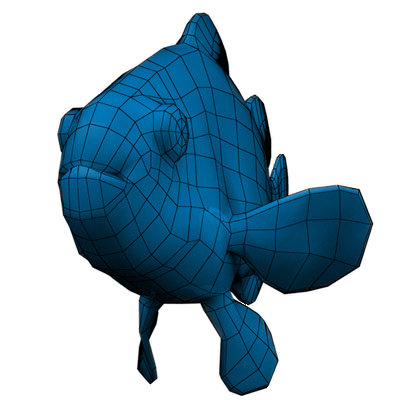
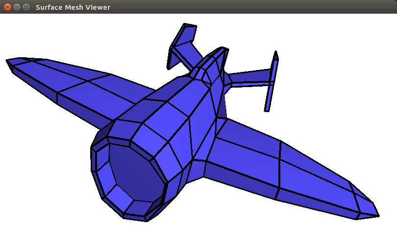

- Generated by
 1.17.0
1.17.0
|
CGAL 6.2 - Surface Mesh
|

The class Surface_mesh is an implementation of a halfedge data structure and can be used to represent a polyhedral surface. It is an alternative to the CGAL packages Halfedge Data Structures and 3D Polyhedral Surface. The main difference is that it is indexed based and not pointer based. Additionally, the mechanism for adding information to vertices, halfedges, edges, and faces is much simpler and is done at runtime and not at compile time.
Because the data structure uses integer indices as descriptors for vertices, halfedges, edges and faces it has a lower memory footprint than a 64-bit pointer based version. As the indices are contiguous, they can be used as index into vectors which store properties.
When elements are removed, they are only marked as removed, and a garbage collection function must be called to really remove them.
The class Surface_mesh can be used through its class member functions as well as through the BGL API as described in the package CGAL and the Boost Graph Library, as it is a model of the concepts MutableFaceGraph and FaceListGraph. Therefore it is possible to apply the algorithms of the packages Triangulated Surface Mesh Simplification, Triangulated Surface Mesh Segmentation, and Triangulated Surface Mesh Deformation on a surface mesh.
The main class Surface_mesh provides four nested classes that represent the basic elements of the halfedge data structure:
These types are just wrappers for an integer and their main purpose is to guarantee type safety. They are default constructible, which yields an invalid element. New elements can be added and removed to the Surface_mesh through a set of low-level functions which do not maintain connectivity. One exception is Surface_mesh::add_face(), which tries to add a new face to the mesh (defined by a sequence of vertices), and fails if the operation is not topologically valid. In that case, the returned Face_index is Surface_mesh::null_face().
As Surface_mesh is index-based Vertex_index, Halfedge_index, Edge_index, and Face_index do not have member functions to access connectivity or properties. The functions of the Surface_mesh instance from which they were created must be used to obtain this information.
The first example shows how to create a very simple Surface_mesh by adding 2 faces, and how to check that a face is correctly added to the mesh.
Example: Surface_mesh/check_orientation.cpp
The second example shows how to access the points associated to the vertices, either for an individual vertex, or as the range of points of the entire mesh. Such a range can be accessed in a for-loop or passed to functions that expect a range of points as input.
Example: Surface_mesh/sm_points.cpp
A surface mesh is an edge-centered data structure capable of maintaining incidence information of vertices, edges, and faces. Each edge is represented by two halfedges with opposite orientation. Each halfedge stores a reference to an incident face and to an incident vertex. Additionally, it stores a reference to the next and previous halfedge incident to its incident face. For each face and each vertex an incident halfedge is stored. Halfedges do not store the index of the opposite halfedge, as Surface_mesh stores opposite halfedges consecutively in memory.
The following figure illustrates the functions which allow to navigate in a surface mesh: Surface_mesh::opposite(), Surface_mesh::next(), Surface_mesh::prev(), Surface_mesh::target(), and Surface_mesh::face(). Additionally, the functions Surface_mesh::halfedge() allows to obtain the halfedge associated to a vertex and to a face. Alternatively, one may use the free functions with the same names defined in the package CGAL and the Boost Graph Library.
The halfedges incident to a face form a cycle. Depending on from which side we look at the surface, the sequence of halfedges appears to be oriented clockwise or counterclockwise. When in this manual we speak about the orientation of a traversal then we look at the surface such that the halfedges around a face are oriented counterclockwise, as illustrated in Figure 29.1
The connectivity does not allow to represent faces with holes.
Surface_mesh provides iterator ranges to enumerate all vertices, halfedges, edges, and faces. It provides member functions returning ranges of elements which are compatible with the Boost.Range library.
The following example shows how to obtain the iterator type from a range, alternatives for obtaining the begin and end iterator, and alternatives for range-based loops.
Example: Surface_mesh/sm_iterators.cpp
Circulators around faces and around vertices are provided as class templates in the package CGAL and the Boost Graph Library.
Circulators around faces basically call Surface_mesh::next() in order to go from halfedge to halfedge counterclockwise around the face, and when dereferenced return the halfedge or the incident vertex or the opposite face.
Circulators around the target vertex of an edge basically call Surface_mesh::opposite(Surface_mesh::next()) in order to go from halfedge to halfedge clockwise around the same target vertex.
All circulators model BidirectionalCirculator. In addition to that they also support a conversion to bool for more convenient checking of emptiness.
The following example shows how to enumerate the vertices around the target of a given halfedge. The second loop shows that each of these circulator types comes with an equivalent iterator and a free function to create an iterator range.
Example: Surface_mesh/sm_circulators.cpp
Surface_mesh provides a mechanism to specify new properties for vertices, halfedges, edges, and faces at run-time. Each property is identified by a string and its key type. All the values of a given property are stored as consecutive blocks of memory. References to properties are invalidated whenever new elements of the key type are added to the data-structure or when the function Surface_mesh::collect_garbage() is performed. Properties of an element will continue to exist after the element has been deleted. Trying to access a property through an invalidated element will result in undefined behavior.
One property is maintained by default, namely "v:point". The value of this property has to be supplied when adding a new point to the data structure via Surface_mesh::add_vertex(). The property can be directly accessed using Surface_mesh::points() or Surface_mesh::point(Surface_mesh::Vertex_index v).
When an element is removed, it is only marked as removed, and it gets really removed when Surface_mesh::collect_garbage() is called. Garbage collection will also really remove the properties of these elements.
The connectivity is also stored in properties, namely the properties named "v:connectivity", "h:connectivity", and "f:connectivity". It is quite similar for the marker of deleted element, where we have "v:removed", "e:removed", and "f:removed".
Convenience functions are provided to remove property maps added by a user, either by index type (Surface_mesh::remove_property_maps<I>()) or all of them (Surface_mesh::remove_all_property_maps()).
To clear a mesh, you have the possibility to get a mesh with all added property maps removed (Surface_mesh::clear()) or to keep them (Surface_mesh::clear_without_removing_property_maps()). Note that in both cases, the "v:point" property map will be preserved and keeping a reference to it is safe.
This example shows how to use the most common features of the property system.
Example: Surface_mesh/sm_properties.cpp
A halfedge stores a reference to a face, its incident face. A halfedge h is on the border, if it has no incident face, that is if sm.face(h) == Surface_mesh::null_face(). An edge is on the border, if any of its halfedges is on the border. A vertex is on the border, if any of its incident halfedges is on the border.
A vertex has only one associated halfedge. If the user takes care that the associated halfedge is a border halfedge, in case the vertex is on the border, there is no need to look at all incident halfedges in the is_border() function for vertices. In order to only check if the associated halfedge is on the border the function Surface_mesh::is_border(Vertex_index v, bool check_all_incident_halfedges = true) must be called with check_all_incident_halfedges = false.
The user is in charge to correctly set the halfedge associated to a vertex after having applied an operation that might invalidate this property. The functions Surface_mesh::set_vertex_halfedge_to_border_halfedge(Vertex_index v), Surface_mesh::set_vertex_halfedge_to_border_halfedge(Halfedge_index h), and Surface_mesh::set_vertex_halfedge_to_border_halfedge() enable to set the border halfedge for a single vertex v, for all vertices on the boundary of the face of h, and for all vertices of the surface mesh, respectively.
The class Surface_mesh is a model of the concept IncidenceGraph defined in the Boost Graph Library. This enables to apply algorithms such as Dijkstra shortest path, or Kruskal minimum spanning tree directly on a surface mesh.
The types and free functions of the BGL API have each a similar type or member function, for example
| BGL | Surface_mesh | Remark |
|---|---|---|
| boost::graph_traits<G>::vertex_descriptor | Surface_mesh::Vertex_index | |
| boost::graph_traits<G>::edge_descriptor | Surface_mesh::Edge_index | |
| vertices(const G& g) | sm.vertices() | |
| edges(const G& g) | sm.edges() | |
| vd = source(ed,g) | vd = sm.source(ed) | |
| na | n = sm.number_of_vertices() | counts non-deleted vertices and has no BGL equivalent |
| n = num_vertices(g) | n = sm.number_of_vertices() + sm.number_of_removed_vertices() | counts used and deleted vertices in order to have an upper bound on the largest vertex index used |
It would be nicer to return the number of vertices without taking removed vertices into account, but this would interact badly with the underlying vertex/edge index mappings. The index mapping would no longer fall in the range [0,num_vertices(g)) which is assumed in many of the algorithms.
The class Surface_mesh is also a model of the concept MutableFaceGraph defined in the package CGAL and the Boost Graph Library. This and similar concepts like HalfedgeGraph refine the graph concepts of the BGL by introducing the notion of halfedges and faces, as well as cycles of halfedges around faces and around vertices. Again, there are similar types and functions, for example:
| BGL | Surface_mesh |
|---|---|
| boost::graph_traits<G>::halfedge_descriptor | Surface_mesh::Halfedge_index |
| boost::graph_traits<G>::face_descriptor | Surface_mesh::Face_index |
| halfedges(const G& g) | sm.halfedges() |
| faces(const G& g) | sm.faces() |
| hd = next(hd, g) | hd = sm.next(hd) |
| hd = prev(hd, g) | hd = sm.prev(hd) |
| hd = opposite(hd,g) | hd = sm.opposite(hd) |
| hd = halfedge(vd,g) | hd = sm.halfedge(vd) |
| etc. |
The BGL API described in the package CGAL and the Boost Graph Library enables us to write geometric algorithms operating on surface meshes, that work for any model of FaceGraph, or MutableFaceGraph. That is surface mesh simplification, deformation, or segmentation algorithms work for Surface_mesh and Polyhedron_3.
BGL algorithms use property maps in order to associate information to vertices and edges. One important property is the index, an integer between 0 and num_vertices(g) for the vertices of a graph g. This allows algorithms to create a vector of the appropriate size in order to store per vertex information. For example a Boolean for storing if a vertex has already been visited during a graph traversal.
The BGL way of retrieving the vertex index property map of a graph g is vipm = get(boost::vertex_index, g), and get(vipm, vd) in order then to retrieve the index for a vertex descriptor vd, and it is get(vertex_index, g, vd) to obtain the vertex index directly.
The first example shows that we can apply Kruskal's minimum spanning tree algorithm directly on a surface mesh.
Example: Surface_mesh/sm_kruskal.cpp
The second example shows how we can use property maps for algorithms such as Prim's minimum spanning tree. The algorithm internally also uses a vertex index property map calling get(boost::vertex_index_t,sm). For the class Surface_mesh this boils down to an identity function as vertices are indices.
Example: Surface_mesh/sm_bgl.cpp
As a model of FaceGraph (see Section Surface Mesh and the BGL API), CGAL::Surface_mesh can be read from and written using a number of different file formats. Refer to the I/O Functions of the CGAL and the Boost Graph Library package, and the I/O Functions of the Polygon Mesh Repair package for more information.
In addition, this package provides Surface_mesh-specific overloads of the I/O functions from the CGAL and the Boost Graph Library package. This enables reading/writing directly from/to internal property maps, see I/O Functions for more information.
Memory management is semi-automatic. Memory grows as more elements are added to the structure but does not shrink when elements are removed.
When you add elements and the capacity of the underlying vector is exhausted, the vector reallocates memory. As descriptors are basically indices, they refer to the same element after a reallocation.
When you remove an element it is only marked as removed. Internally it is put in a free list, and when you add elements to the surface mesh, they are taken from the free list in case it is not empty.
For all elements we offer a function to obtain the number of used elements, as well as the number of used and removed elements. For vertices the functions are Surface_mesh::number_of_vertices() and Surface_mesh::number_of_removed_vertices(), respectively. The first function is slightly different from the free function num_vertices(const G&) of the BGL package. As BGL style algorithms use the indices of elements to access data in temporary vectors of size num_vertices() this function must return a number larger than the largest index of the elements.
Iterators such as Surface_mesh::Vertex_iterator only enumerate elements that are not marked as deleted.
To really shrink the used memory, Surface_mesh::collect_garbage() must be called. Garbage collection also compacts the properties associated with the surface mesh.
Note however that by garbage collecting elements get new indices. In case you keep vertex descriptors they are most probably no longer referring to the right vertices.
Example: Surface_mesh/sm_memory.cpp
A surface mesh can be visualized by calling the CGAL::draw<SM>() as shown in the following example. This function opens a new window showing the given surface mesh. A call to this function is blocking, that is the program continues as soon as the user closes the window.
Example: Surface_mesh/draw_surface_mesh.cpp
This function requires CGAL_Qt6, and is only available if the macro CGAL_USE_BASIC_VIEWER is defined. Linking with the cmake target CGAL::CGAL_Basic_viewer will link with CGAL_Qt6 and add the definition CGAL_USE_BASIC_VIEWER.

As integer type for the indices we have chosen std::uint32_t. On 64 bit operating systems they take only half the size of a pointer. They still allow to have meshes with 2 billion elements.
We use std::vector for storing properties. So by accessing the address of the 0th element of a property map you can access the underlying raw array. This may be useful, for example for passing an array of points to OpenGL.
We use a freelist for removed elements. This mean when a vertex gets removed and later add_vertex is called, the memory of the removed element is reused. This especially means that the n-th inserted element has not necessarily the index n-1, and when iterating over elements they will not be enumerated in the insertion order.
This package is derived from an early version of Daniel Sieger and Mario Botsch package Surface_mesh [1], which is inspired from the design of OpenMesh and the CGAL package 3D Polyhedral Surface.
Philipp Moeller and Andreas Fabri worked on the code so that iterators fulfill the requirements of the STL iterator concepts, and changed the API so that it becomes a model of the concepts MutableFaceGraph and FaceListGraph of the package CGAL and the Boost Graph Library.